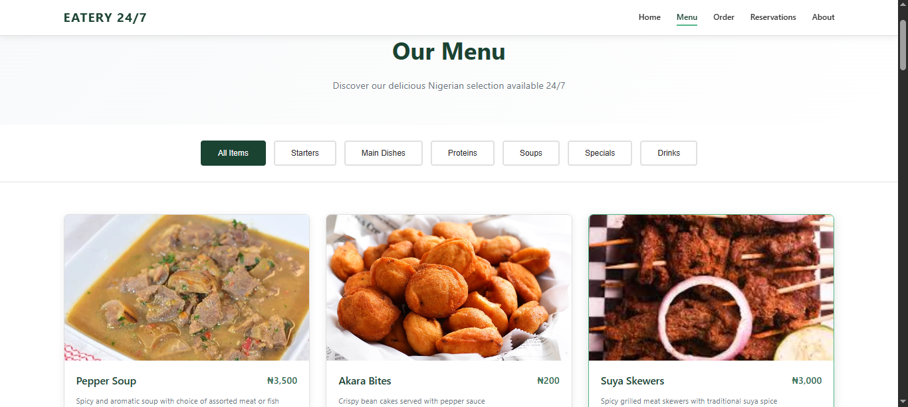

Eatery 24/7 — Restaurant Website
Overview
Eatery 24/7 is a Lagos-based food brand that offers fine dining around the clock. I volunteered to build their full website, giving the restaurant a modern online presence where customers can browse the menu, place orders, and make reservations — all from their phone or computer.
The Problem It Solves
Many small restaurants and food brands in Lagos operate without a proper website, relying solely on social media or word of mouth. This limits their reach and makes it harder for new customers to find them, see the menu, or make bookings. A dedicated website gives Eatery 24/7 credibility and makes the customer experience smoother and more professional.
Key Features
- Homepage with featured signature dishes and pricing (Jollof Rice, Goat Meat Peppersoup, Isi Ewu)
- Full online menu page with categories and dish details
- Online food ordering system
- Table reservation system — customers can book a table directly from the site
- About page describing the restaurant's story and values
- Contact form with address, phone, and email
- Social media links (Instagram, Facebook, Twitter)
- Fully responsive design — optimised for mobile users
How I Built It
The site was built with HTML, CSS, and vanilla JavaScript. I paid special attention to the visual presentation of food — using high quality images to make the dishes look appealing. The layout was designed mobile-first, since most Lagos customers browse on their phones. The reservation and order pages use structured HTML forms to capture customer input cleanly.
My Role
This was a volunteer project — I approached the brand and offered to build their site because I believed in what they were doing. I handled everything: design, development, content layout, and deployment. It was a great opportunity to apply my skills to a real business and build something that genuinely helps them grow.